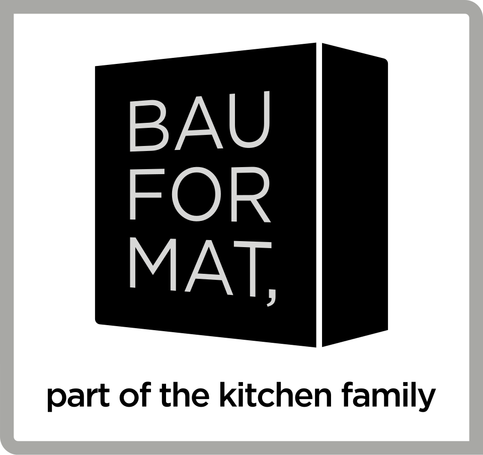

Es werden diverse Vorkehrungen getroffen, um die Sicherheit und den Schutz der Mitarbeitenden am Arbeitsplatz zu gewährleisten.
Dazu gehören z.B.
— Sicherheitsschuhe und Gehörschutz im produktiven Bereich.
— Außerdem gibt es regelmäßige Sicherheitsunterweisungen
— entsprechende Anweisungen für die unterschiedlichen Arbeitsplätze.
— Übergreifend gibt ein Team aus Sicherheitsfachkräften, die regelmäßig zusammensitzen und Themen des Arbeitsschutzes besprechen und umsetzen.